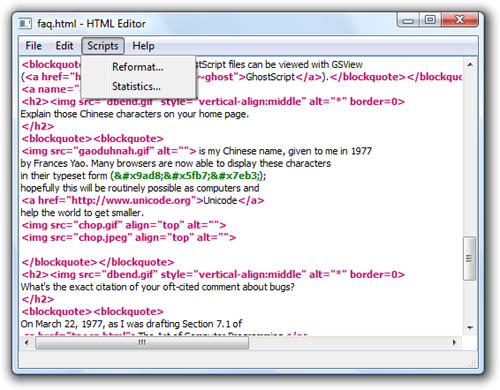
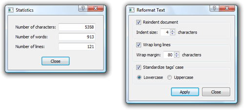

|
|
Providing scripts to compute values, as we did in the preceding section, is useful but limited. Often, we want to access some of the application's widgets and other components directly from the script. We might also want to provide additional dialogs by combining ECMAScript files with Qt Designer .ui files. Using these techniques, it is possible to develop applications mostly in ECMAScript, which is appealing to some programmers.
In this section, we will look at the HTML Editor application shown in Figure 22.3. This application is a plain text editor that highlights HTML tags using a QSyntaxHighlighter. What makes the application special is that it provides a Scripts menu that is populated with extensions provided as .js scripts, along with corresponding .ui dialogs, in the application's scripts subdirectory. The dialogs let the user parameterize the operation they want performed.

We have provided two extensions: a Statistics dialog and a Reformat Text dialog, both shown in Figure 22.4. The Statistics dialog is purely informative. It counts the number of characters, words, and lines in a document and presents the totals to the user in a modal dialog. The Reformat Text dialog is more sophisticated. It is a modeless dialog, which means that the user can continue to interact with the application's main window while the dialog is shown. The dialog can be used to reindent the text, to wrap long lines, and to standardize the case used for tags. All these operations are implemented in ECMAScript.

The heart of the application is the HtmlWindow class, a QMainWindow subclass that uses a QTextEdit as its central widget. Here, we will review only those parts of the code that are relevant to application scripting.
When the application starts up, we must populate the Scripts menu with actions corresponding to the .js and .ui files found in the scripts subdirectory. This is quite similar to what we did in the Calculator application's createCustomButtons() function in the preceding section:
void HtmlWindow::createScriptsMenu()
{
scriptsMenu = menuBar()->addMenu(tr("&Scripts"));
QDir scriptsDir = directoryOf("scripts");
QStringList jsFileNames = scriptsDir.entryList(QStringList("*.js"),
QDir::Files);
foreach (QString jsFileName, jsFileNames)
createScriptAction(scriptsDir.absoluteFilePath(jsFileName));
scriptsMenu->setEnabled(!scriptsMenu->isEmpty());
}
For each script, we call the createScriptAction() function to create an action and add it to the Scripts menu. If no scripts are found, we disable the menu.
The createScriptAction() function performs the following steps:
|
1.
|
Load and evaluate the script, storing the
resulting object in a variable.
|
|
2.
|
Construct a dialog from the .ui file
using QUiLoader.
|
|
3.
|
Make the dialog accessible to the script.
|
|
4.
|
Expose application-specific functionality to
the script.
|
|
5.
|
Create a QAction to make the script
accessible to the user.
|
The function has to do a lot of work and is quite long, so we will review it in parts.
bool HtmlWindow::createScriptAction(const QString &jsFileName)
{
QFile jsFile(jsFileName);
if (!jsFile.open(QIODevice::ReadOnly)) {
QMessageBox::warning(this, tr("HTML Editor"),
tr("Cannot read file %1:\n%2.")
.arg(strippedName(jsFileName))
.arg(jsFile.errorString()));
return false;
}
QTextStream in(&jsFile);
in.setCodec("UTF-8");
QString script = in.readAll();
jsFile.close();
QScriptValue qsScript = interpreter.evaluate(script);
if (interpreter.hasUncaughtException()) {
QMessageBox messageBox(this);
messageBox.setIcon(QMessageBox::Warning);
messageBox.setWindowTitle(tr("HTML Editor"));
messageBox.setText(tr("An error occurred while executing the "
"script %1.")
.arg(strippedName(jsFileName)));
messageBox.setInformativeText(
tr("%1.").arg(interpreter.uncaughtException()
.toString()));
messageBox.setDetailedText(
interpreter.uncaughtExceptionBacktrace().join("\n"));
messageBox.exec();
return false;
}
We begin by reading in the .js file. Since we need to use only one interpreter, we have a single QScriptEngine member variable called interpreter. We evaluate the script and store its return value as a QScriptValue called qsScript.
If the script cannot be evaluated (e.g., due to a syntax error), the QScriptEngine::hasUncaughtException() function will return true. In this case, we report the error using a QMessageBox.
For the scripts used by this application, we have adopted the convention that each script must return an ECMAScript Object when it is evaluated. This Object must provide two properties: a string called text that holds the text to be used in the Scripts menu to identify the script, and a function called run() that should be called when the user chooses the script from the Scripts menu. We store the Object in the qsScript variable. The main benefit of this approach is that we need to read and parse the scripts only once, at startup.
QString uiFileName = jsFileName;
uiFileName.chop(3);
uiFileName += ".ui";
QFile uiFile(uiFileName);
if (!uiFile.open(QIODevice::ReadOnly)) {
QMessageBox::warning(this, tr("HTML Editor"),
tr("Cannot read file %1:\n%2.")
.arg(strippedName(uiFileName))
.arg(uiFile.errorString()));
return false;
}
QUiLoader loader;
QWidget *dialog = loader.load(&uiFile, this);
uiFile.close();
if (!dialog) {
QMessageBox::warning(this, tr("HTML Editor"),
tr("Error loading %1.")
.arg(strippedName(uiFileName)));
return false;
}
Another convention we have adopted is that each script must have a corresponding .ui file to provide the script with a GUI dialog. The .ui file must have the same base name as the script.
We attempt to read the .ui file and to dynamically create a QWidget that contains all the widgets, layouts, and connections specified in the .ui file. The widget's parent is given as the second argument to the load() call. If an error occurs, we warn the user and return.
QScriptValue qsDialog = interpreter.newQObject(dialog);
qsScript.setProperty("dialog", qsDialog);
QScriptValue qsTextEdit = interpreter.newQObject(textEdit);
qsScript.setProperty("textEdit", qsTextEdit);
QAction *action = new QAction(this);
action->setText(qsScript.property("text").toString());
action->setData(QVariant::fromValue(qsScript));
connect(action, SIGNAL(triggered()),
this, SLOT(scriptActionTriggered()));
scriptsMenu->addAction(action);
return true;
}
Once we have successfully read the script and its user interface file, we are almost ready to add the script to the Scripts menu. But first, there are a few details that we must attend to. We want the run() function of our script to have access to the dialog we just created. In addition, the script should be allowed to access the QTextEdit that contains the HTML document being edited.
We begin by adding the dialog to the interpreter as a QObject *. In response, the interpreter returns the Object that it uses to represent the dialog. We store this in qsDialog. We add the qsDialog object to the qsScript object as a new property called dialog. This means that the script can access the dialog, including its widgets, through the newly created dialog property. We use the same technique to provide the script with access to the application's QTextEdit.
Finally, we create a new QAction to represent the script in the GUI. We set the action's text to qsScript's text property, and the action's "data" item to qsScript itself. Lastly, we connect the action's triggered() signal to a custom scriptActionTriggered() slot, and add the action to the Scripts menu.
void HtmlWindow::scriptActionTriggered()
{
QAction *action = qobject_cast<QAction *>(sender());
QScriptValue qsScript = action->data().value<QScriptValue>();
qsScript.property("run").call(qsScript);
}
When this slot is called, we begin by finding out which QAction was triggered. Then we extract the action's user data using QVariant::value<T>() to cast it to a QScriptValue, which we store in qsScript. Then we invoke qsScript's run() function, passing qsScript as a parameter; this will make qsScript the this object inside the run() function.[*]
[*] Qt 4.4 is expected to provide a qScriptConnect() function that will allow us to establish C++-to-script connections. Using this function, we could then connect the QAction's triggered() signal directly to the qsScript's run() function as follows:
Code View:qScriptConnect(action, SIGNAL(triggered()), qsScript, qsScript.property("run"));
QAction's "data" item mechanism is based on QVariant. The QScriptValue type is not one of the data types that QVariant recognizes. Fortunately, Qt provides a mechanism for extending the types that QVariant can handle. At the beginning of htmlwindow.cpp, after the #includes, we have the following line:
Q_DECLARE_METATYPE(QScriptValue)
This line should appear after the custom data type it refers to has been declared, and can be done only for data types that have a default constructor and a copy constructor.
Now that we have seen how to load a script and a user interface file, and how to provide an action that the user can trigger to run the script, we are ready to look at the scripts themselves. We will begin with the Statistics script since it is the easiest and shortest, reviewing it in parts.
var obj = new Object; obj.text = "&Statistics...";
We begin by creating a new Object. This is the object we will add properties to and that we will return to the interpreter. The first property we set is the text property, with the text that we want to appear in the Scripts menu.
obj.run = function() {
var text = this.textEdit.plainText;
this.dialog.frame.charCountLineEdit.text = text.length;
this.dialog.frame.wordCountLineEdit.text = this.wordCount(text);
this.dialog.frame.lineCountLineEdit.text = this.lineCount(text);
this.dialog.exec();
};
The second property we create is the run() function. The function reads the text from the dialog's QTextEdit, populates the dialog's widgets with the results of the calculations, and finishes by modally showing the dialog.
This function can work only if the Object variable, obj, has suitable textEdit and dialog properties, which is why we needed to add them at the end of the createScriptAction() function. The dialog itself must have a frame object (in this case a QFrame, but the type does not matter), with three child widgets—charCountLineEdit, wordCountLineEdit, and lineCountLineEdit, each with a writable text property. Instead of this.dialog.frame.xxxCountLineEdit, we could also write findChild(" xxx CountLineEdit"), which performs a recursive search and is therefore more robust if we choose to change the dialog's design.
obj.wordCount = function(text) {
var regExp = new RegExp("\\w+", "g");
var count = 0;
while (regExp.exec(text))
++count;
return count;
};
obj.lineCount = function(text) {
var count = 0;
var pos = 0;
while ((pos = text.indexOf("\n", pos)) != -1) {
++count;
++pos;
}
return count + 1;
};
return obj;
The wordCount() and lineCount() functions have no external dependencies and work purely in terms of the String passed in to them. Note that the wordCount() function uses the ECMAScript RegExp class, not Qt's QRegExp class. At the end of the script file, the return statement ensures that the Object with the text and run() function properties is returned to the interpreter, ready to be used.
The Reformat script follows a similar pattern to the Statistics script. We will look at it next.
var obj = new Object;
obj.initialized = false;
obj.text = "&Reformat...";
obj.run = function() {
if (!this.initialized) {
this.dialog.applyButton.clicked.connect(this, this.apply);
this.dialog.closeButton.clicked.connect(this, this.dialog.close);
this.initialized = true;
}
this.dialog.show();
};
obj.apply = function() {
var text = this.textEdit.plainText;
this.textEdit.readOnly = true;
this.dialog.applyButton.enabled = false;
if (this.dialog.indentGroupBox.checked) {
var size = this.dialog.indentGroupBox.indentSizeSpinBox.value;
text = this.reindented(text, size);
}
if (this.dialog.wrapGroupBox.checked) {
var margin = this.dialog.wrapGroupBox.wrapMarginSpinBox.value;
text = this.wrapped(text, margin);
}
if (this.dialog.caseGroupBox.checked) {
var lowercase = this.dialog.caseGroupBox.lowercaseRadio.checked;
text = this.fixedTagCase(text, lowercase);
}
this.textEdit.plainText = text;
this.textEdit.readOnly = false;
this.dialog.applyButton.enabled = true;
};
obj.reindented = function(text, size) {
...
};
obj.wrapped = function(text, margin) {
...
};
obj.fixedTagCase = function(text, lowercase) {
...
};
return obj;
We use the same pattern as before, creating a featureless Object, adding properties to it, and returning it to the interpreter. In addition to the text and run() properties, we add an initialized property. The first time run() is called, initialized is false, so we set up the signal–slot connections that link button clicks in the dialog to functions defined in the script.
The same kinds of assumptions apply here as applied to the Statistics script. We assume that there is a suitable dialog property and that it has buttons called applyButton and closeButton. The apply() function interacts with the dialog's widgets, in particular with the Apply button (to disable and enable it) and with the group boxes, checkboxes, and spin boxes. It also interacts with the main window's QTextEdit from where it gets the text to work on, and to which it gives the text that results from the reformatting.
We omitted the code for the reindented(), wrapped(), and fixedTagCase() functions used internally by the script, since the actual computations are not relevant to understanding how to make Qt applications scriptable.
We have now completed our technical review of how to use scripts within C++/Qt applications, including ones that have their own dialogs. In applications such as HTML Editor, where the scripts interact with application objects, we must also consider licensing issues. For open source applications, there are no constraints beyond those imposed by the requirements of the open source license itself. For commercial applications, the story is slightly more complicated. Those who write scripts for commercial applications, including an application's end-users, are free to do so if their scripts use only built-in ECMAScript classes and application-specific APIs, or if they use the Qt API to perform minor extensions or modifications to existing components. But any script writer whose scripts implement core GUI functionality must have a commercial Qt license. Commercial Qt users should contact their Trolltech sales representative if they have licensing questions.
|
|
| Converted from CHM to HTML with chm2web Pro 2.85 (unicode) |